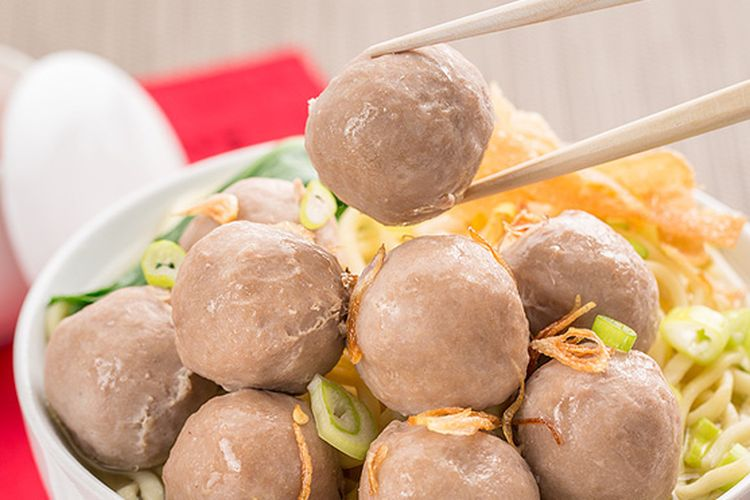

Makanan terbaik yang cocok dimakan saat musim hujan
Bakso bisa dibuat menjadi makanan pedas atau manis.
Bakso juga mudah sekali dibuat dan merupakan makanan dari generasi ke generasi.
Ingredients
- Miehun
- Bakso
- Telur
- Air mendidih
- Bawang
- Bumbu bakso
Recipe instructions
- Iris bawang
- Masukkan mie kedalam air mendidih
- Masukkan bakso
- Siapkan bumbu di atas piring
- Masukkan telur kedalam mie
- Siapkan mangkuk
- Campur hingga merata dengan bumbu bakso dan masukkan ke dalam mangkuk ketika sudah masak
Kembali ke atas
Kembali ke menu